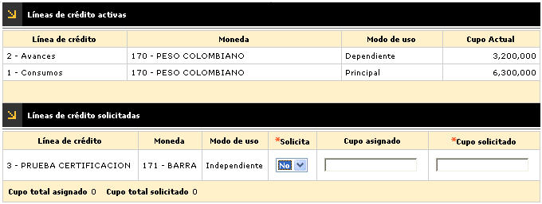

Linea crédito adicional crédito |
Líneas de crédito: Segundo paso del wizard que contiene los siguientes campos:

El primer bloque Líneas de crédito activas, contiene los siguientes campos:
Línea de crédito |
Campo que despliega las líneas de crédito parametrizadas en la Definición de productos. |
Moneda |
Campo de salida que ilustra la moneda en la que se expresan los saldos de cada una de las líneas de crédito. |
Modo uso |
Campo de salida que indica si la línea de crédito es Principal, Dependiente, Independiente o Especial, lo que determina si se puede borrar o no en la solicitud, así como la relación entre los cupos a estas asignado. |
Cupo actual |
Campo de salida que muestra el monto o valor del cupo actual que posee cada una de las líneas de crédito del producto presente a sustituir. |
El segundo bloque Líneas de crédito solicitadas, contiene los siguientes campos:
Línea de crédito |
Campo que despliega las líneas de crédito parametrizadas en la Definición de productos. |
Moneda |
Campo de salida que ilustra la moneda en la que se expresan los saldos de cada una de las líneas de crédito. |
Modo uso |
Campo de salida que indica si la línea de crédito es Principal, Dependiente, Independiente o Especial, lo que determina si se puede borrar o no en la solicitud, así como la relación entre los cupos a estas asignado. |
Solicita |
Campo que permite señalar si se solicita cupo para la línea o no, la cual también se puede borrar, excepto la línea principal. |
Cupo asignado |
Este campo es alimentado automáticamente por el sistema con el mismo monto del valor solicitado, cuando los parámetros de la solicitud indican que ésta no pasará por la etapa de evaluación. Si se ha marcado que no se solicita la línea y si se ingresa algún valor para lineas de credito en cupo asignado, el sistema asignará cero por defecto. Por otro lado si la linea se ha marcado como solicitada el aplicativo exige que por lo menos se diligencie el valor del cupo de la línea principal. |
Cupo solicitado |
Campo que contiene el monto solicitado por cada línea. El sistema controla que dicho cupo no supere el valor máximo parametrizado en las Líneas crédito de la Definición de productos y que la sumatoria de estas tampoco exceda el cupo máximo por producto. Si se ha marcado que no se solicita la línea y si se ingresa algún valor para lineas de credito en cupo solicitado, el sistema asignará cero por defecto. Por otro lado si la línea se ha marcado como solicitada, el sistema permite que tanto la línea principal como las demás queden en cero si el usuario asi lo prefiere, en este caso el aplicativo exigirá que la línea principal tenga algún valor así sea cero. |
A través de los botones de la parte inferior derecha, se podrá regresar, cancelar el proceso, o avanzar al tercer paso del wizard: Documentos.